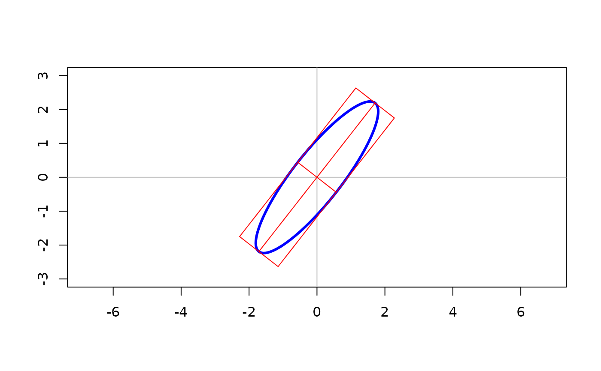
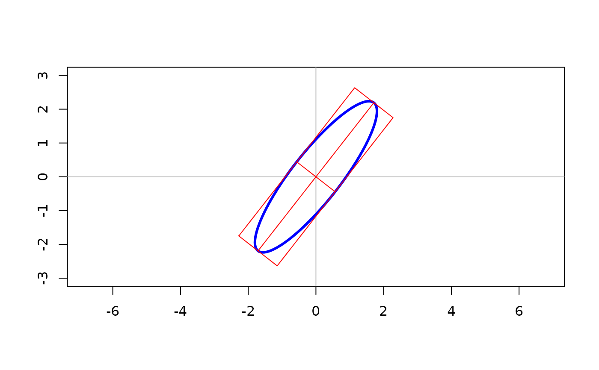

Tools to generate 2D data, concentration and confidence ellipses given a center and a 'variance' matrix. Also tools to generate points on a ellipse in a given direction or conjugate to that direction, axes along a vector or conjugate to it, tangent lines at a point or parallel to a vector.
Generates an ellipse augmented with conjugate axes and tangents
ell is a utility function used to calculate the (X, Y) coordinates of
a 2D ellipse for the purpose of drawing statistical diagrams and plots.
Usage
ell(center = rep(0, 2), shape = diag(2), radius = 1, n = 100)
ellplus(
center = rep(0, 2),
shape = diag(2),
radius = 1,
n = 100,
angles = (0:n) * 2 * pi/n,
fac = chol,
ellipse = all,
diameters = all,
box = all,
all = FALSE
)
dellplus(x, y, ...)
ell(center = rep(0, 2), shape = diag(2), radius = 1, n = 100)Arguments
- center
X,Y location of the center of the ellipse
- shape
A 2x2 matrix, typically a covariance matrix of data (for a data ellipse), or a covariance matrix of estimated parameters in a model (for a confidence ellipse).
- radius
Radius of the ellipse-generating unit circle. The default,
radius=1corresponds to a "standard" ellipse.- n
Number of points on the unit circle used to calculate the ellipse
- angles
Angles around the unit circle used to calculate the ellipse
- fac
A function defining the conjugate axes used to transform the unit circle into an ellipse. The default,
chol, uses the right Cholesky factor ofshape.- ellipse
Logical to indicate if the points on the ellipse should be returned
- diameters
Logical to indicate if the points defining the ends of the conjugate axes of the ellipse should be returned
- box
Logical to indicate if the points on the conjugate-axes bounding box should be returned
- all
Logical to request all of
ellipse,diametersandbox. IfFALSE, only the components specified separately byellipse,diametersandboxare returned.- x, y
data values
- ...
arguments passed to
ellplus- na.rm
remove missing data in forming data ellipse, default TRUE
Value
Returns a 2-column matrix of (X,Y) coordinates suitable for drawing
with lines().
For ellplus, when more than one of the options ellipse,
diameters, and box is TRUE, the different parts are
separated by a row of NA.
Details
The ellipse is contour of the bivariate normal distribution with variance 'shape'.
ellplus can produce, in addition to the points of an ellipse, the conjugate axes corresponding to a chol or other decomposition and the surrounding parallelogram.
ellplus can produce, in addition, the
conjugate axes corresponding to a chol or other decomposition and the
surrounding parallelogram defined by these axes.
Add function that works with direction to compute slices and conjugate directions.
See also
cell, dell, dellplus,
Examples
plot( x=0,y=0, xlim = c(-3,3), ylim = c(-3,3),
xlab = '', ylab = '', type = 'n', asp=1)
abline( v=0, col="gray")
abline( h=0, col="gray")
A <- cbind( c(1,2), c(1.5,1))
W <- A %*% t(A)
lines( ell(center=c(0,0), shape = W ), col = 'blue', lwd=3)
lines( ellplus(center=c(0,0), shape = W, box=TRUE, diameters=TRUE ), col = 'red')
 # show conjugate axes for PCA factorization
pca.fac <- function(x) {
xx <- svd(x)
ret <- t(xx$v) * sqrt(pmax( xx$d,0))
ret
}
plot( x=0,y=0, xlim = c(-3,3), ylim = c(-3,3),
xlab = '', ylab = '', type = 'n', asp=1)
abline( v=0, col="gray")
abline( h=0, col="gray")
lines( ell(center=c(0,0), shape = W ), col = 'blue', lwd=3)
lines( ellplus(center=c(0,0), shape = W, box=TRUE, diameters=TRUE, fac=pca.fac ), col = 'red')

# show conjugate axes for PCA factorization
pca.fac <- function(x) {
xx <- svd(x)
ret <- t(xx$v) * sqrt(pmax( xx$d,0))
ret
}
plot( x=0,y=0, xlim = c(-3,3), ylim = c(-3,3),
xlab = '', ylab = '', type = 'n', asp=1)
abline( v=0, col="gray")
abline( h=0, col="gray")
lines( ell(center=c(0,0), shape = W ), col = 'blue', lwd=3)
lines( ellplus(center=c(0,0), shape = W, box=TRUE, diameters=TRUE, fac=pca.fac ), col = 'red')
